地图符号用于抽象描述地面物体的存在、分布、数量特征、质量特征较小的物体或肉眼看不见的地理现象的地图表达要素。
地图符号的表达参量，包括形状、尺寸、色彩、亮度、纹理、空间造型等状态视觉参量，持续时间、变化速率、变化次序、节奏等动态描述参量，和旋转、缩放、LOD调整、阴影展示等操作控制参量。
全息地图多维动态符号的视觉参量设计包含基本视觉参量、状态视觉参量、动态视觉参量和交互视觉参量三个层次。
基本视觉参量：包括形状、尺寸、颜色、结构、方向、明度、密度和位置八个基本视觉参量；
状态视觉参量：包括形状、尺寸、色彩、亮度、纹理、空间造型6 个变量；
动态视觉参量主要强调对(过程)动态信息的描述。主要包括持续时间、变化速率、变化次序、时刻、频率、同步、节奏等变量；
交互视觉参量：包括旋转、缩放、阴影计算、LOD 调整等。
全息地图场景表达的地图符号视觉参量应符合以下规定：
（1）符号与场景之间便于视觉区分；
（2）符号之间便于视觉区分；
（3）多维动态地图符号能够抽象描述地图场景特征和地学现象与过程。
地理场景是指面向特定功能由相互关联的实体对象构成的空间子集及其时空关系，用于描述地理现象、地理事件与地理过程的分布、发生与状态，包括宏观-微观、静态-动态、真实-虚拟、2D-3D、连续-离散、粗糙-精细、室内-室外场景等。
地质构造模型： 将地质、测井、地球物理资料和各种解释结果或者概念，利用计算机图形技术，生成的三维定量随机模型。
水文模型： 用模拟方法将复杂的水文现象和过程经概化所给出的近似的科学模型。按模拟方式分为水文物理模型(实体模型、比尺模型)和水文数学模型两种基本类型。
大气物理模型： 描述大气的各物理量，如温度、压力、密度等，随大气深度的分布规律的理论模型。
城市环境模型： 描述城市范围内，诸如水、大气、人口、土地、污染源、交通、工矿企业等明显具有空间 (地理) 分布特性的环境要素的物体能量及其运动转化的数据模型。
数字景观模型 DLM： 描述地理数据库，以实体 (Entity) 形式描述地理客体的精确位置、形状和属性, 以及实体之间关系 (如拓扑结构) 变化过程等的数字模型。
数字制图模型 DCM： 描述地图数据库，在比例尺要求下以符号的形式反映地理客体的精确位置、形状和属性, 以及实体之间关系 (如拓扑结构) 变化过程等的数字模型。
地图符号LOD表达是指根据物体模型的节点在显示环境中所处的位置和重要度，决定物体渲染的资源分配，降低非重要物体的面数和细节度，从而获得高效率的渲染运算。
对空间数据建立多粒度符号表达模型，满足不同用户对数据多层次表达的需求。地学领域的尺度概念是指研究对象在空间域上延展范围或时间域上覆盖区间，而地图学与地理信息系统中的尺度与比例尺有关，定义为表达空间（地图图面）中的距离与实际地理空间距离的比率，多尺度表达具有多粒度、多精细度、多层次展示的含义。地理信息表达具有空间特征、时间特征和语义特征， 地理信息的多尺度建模也涉及空间多尺度表达、时间多尺度表达和语义多尺度表达三个范畴。空间多尺度表达与传统的多比例尺地图表达类似，在空间比例尺控制下对同一区域构建不同详细程度的地图版本。时间多尺度表达是对时态特征、时空过程和动态现象在时间尺度上构建不同精度的时间版本表达。语义多尺度表达则是对语义属性特征建立不同层次、不同等级的语义信息表达。
采用大量形状简单但赋予“生命”的微小粒子作为基本元素来表示不规则的模糊物体。其中，粒子是一种被定义为具有空间位置、质量、速度、影响力、大小形状等多种属性的单元体, 它按照一定的规则出生、发展直至消亡。
场是指在某一空间区域内的每一个点，都对应着某个确定的物理量，如电场、磁场、温度场等。如果这个物理量具有方向特征，则称之为矢量场，如海洋中水的运动形成流场，不同空间位置的流速流向不同，是典型的矢量场。
粒子系统采用大量形状简单但赋予生命的微小粒子作为基本元素来表示不规则的模糊物体，它充分体现了模糊物体的动态性和随机性，能很好地模拟烟火、薄雾、雨水和雪花等三维自然景物。基于粒子系统的矢量场可视化方法可以看作专题地图制图中运动线法的发展，它在矢量场中随机而均匀地布设大量粒子（种子点），驱使这些粒子在矢量场中运动并对它们进行追踪，通过连续动态绘制粒子集的运动状态，可以直观而形象地对矢量场进行表达。粒子系统可视化通过大量粒子的运动对矢量场进行模拟和表达，符合人们对于流体的自然感受，通过动态的粒子运行轨迹，可以直观地表示矢量场的速度和方向，矢量场中的重要特征如漩涡、激流，以及重要临界点如源点、汇点、鞍点等都能在可视化过程中有效展现出来。
粒子系统可以分为状态无关粒子系统和状态相关粒子系统。状态无关粒子系统是指系统中的粒子在运动过程中不受当前状态和其他粒子的影响。随着时间的变化，每个粒子的位置和属性信息都可以通过粒子的初始化属性和当前时间计算得到。如常见的雪花、烟花、喷泉等粒子系统都是状态无关的粒子系统。状态相关粒子系统是指系统中的粒子在运动过程中的速度和方向受到当前粒子状态和位置的影响。此时粒子的状态并不能像无状态粒子一样依靠初始属性和当前的时间计算，而是需要粒子与其所处的环境交互以及粒子之间的交互。例如矢量场粒子系统中的每个粒子的运动状态和属性需要实时获取当前位置的流速和流向，而且在矢量场涡旋出，粒子会出现汇集的现象，此时需要计算粒子之间的碰撞关系以及粒子的合并。状态相关粒子系统控制复杂、计算量大，但是对复杂的自然现象模拟更加真实。
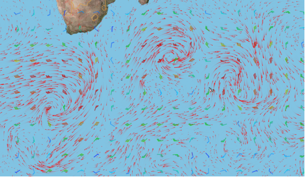
图1 基于粒子系统的矢量场可视化
直接可视化不关注于数据间的连续变化，且几乎不需要预处理便可通过图标或者颜色的映射来表达整个矢量场区域。例如点图标法中的矢量箭头法，用具有大小和方向的箭头映射矢量的大小和方向；颜色编码法，通过建立颜色值与矢量场数值之间的映射关系来直观表达出流域内矢量场数值的大小。这种算法对矢量场连续性表达不友好。
几何形状可视化既关注矢量场数值，又联系数据间的连续变化，利用几何符号形状、方向、大小、颜色以及符号之间的排列分布等信息来表达矢量场。例如记录粒子流实际轨迹的迹线和某一时间间隔内相继经过空间一固定点的流体质点依次串连起来而成的脉线等矢量线法。这种算法可以表达出一段时间内矢量场的整体变化情况，但无法表达出某一时刻的变化。
基于纹理的可视化从矢量场整体出发，利用连续变化的颜色表达整个矢量场的方向特征，也可以通过灰度或者色彩的对比表现矢量场数值的差异，因为能够获得更为细致的画面。但纹理方式只能停留在二维平面上，对于三维矢量场的表达较为困难。
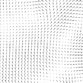 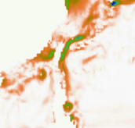
(a) (b)
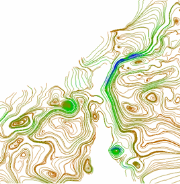 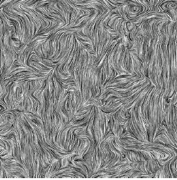
(c) (d)
图2 (a)箭头法，(b)颜色编码法，(c)流线表示的矢量场可视化，(d)纹理可视化
综合上述现有表达方法，粒子系统的符号设计中采用线形符号较为合适，将粒子当前时刻的位置和前几帧所在的位置连接形成的多线段作为粒子符号，如图3所示。其中，每段线的长度称为粒子的步长，线段的个数称为粒子的步数。粒子的步数在粒子初始化之后保持不变，但是粒子的步长会随着流速的大小变化。
图3 多线段粒子尾线符号
影响粒子符号的静态视觉变量主要有形状、尺寸、方向、明度，颜色和位置。
形状变量是地图符号对空间对象类型的最直观的体现。在矢量场粒子系统符号的设计中，粒子的形状采用线状符号，线状符号不仅可以表达出矢量场中粒子的变化过程和变化的趋势，而且多线段的线状符号在表达矢量场转折时，流线趋于平滑，对矢量场的表现更加真实。
尺寸变量是对空间对象的大小、间隔和重要性的表现。粒子符号的尺寸并不是保持不变的，由于粒子符号是由几个时刻的多线段组成的，所以其大小会随着粒子当前的流速和粒子的追踪步长变化而变化。而且在矢量场涡旋出，洋流聚集，矢量场粒子系统中粒子合并，粒子的粗细也会发生变化。
方向变量是指地图符号构成元素的方向，方向的变化是相对于地图而言的。粒子系统中，每个粒子都具有自己的方向，大量粒子的运动方向可以体现出当前时刻矢量场的流动方式和当前矢量场的结构。粒子符号的方向与当前时刻矢量场的方向相同，会随着时间的变化而变化。
明度变量主要是指地图符号色彩调子的明暗程度。主要是指地图符号中不同颜色的亮度，因为不同的颜色在明度上都有所差异。粒子符号同样也受到明度的影响，明度变量的使用会影响粒子符号的感知性。
颜色变量是最活跃的一种视觉变量。颜色具有三种特性，即色相、亮度和彩度，三种特性对制图来说各有作用。颜色变量在地图符号中的使用，不仅可以增强地图上各要素间的视觉差异，密切同类要素间的联系，增强地图的易读性及表达能力，而且可以使地图界面更加美化，增强地图的艺术性与感染力。在粒子系统中，粒子符号的颜色可以通过分层设色，用不同的颜色表达流速的大小。但是这种方法会导致粒子符号的颜色和底图不搭配，影响制图的效果。所以在粒子符号的设计过程中，要考虑地图的美观，底图中海洋的颜色一般都是蓝色或者深蓝色，所以为了能够清楚的表达矢量场，粒子符号的颜色用白色效果更为明显。
虽然在大多数情况下，地图符号的位置是由制图对象的空间地理坐标所决定的，与符号本身无关。但是在实际的制图过程中，为了能够更加准确的表达地图对象或者为了增强地图的整体感，在地图上依然存在一些可以在一定范围内移动的对象。如某些定位于区域的符号或者注记的位置。所以，位置变量依然是基本的视觉变量。粒子符号作为动态的符号，其位置与上一时刻和当前时刻的流速流向有关。粒子符号的位置会随着时间的变化而变化。
显示时刻是指地图中某一现象出现或者变化的起始时间，它可以既可以用于时间动画也可以用于非时间动画中。在非时间动画中，显示时刻指某一行为的出现；在时间动画中，显示时刻指某一现象出现的时间点，并且这一时间是具有实际意义的时间。粒子符号的显示时刻分为两种。第一种是同一区域不同帧上的显示时刻。粒子系统在对一个时刻的矢量场数据进行可视化表达的过程中，粒子符号的形状和结构是随着时间的变化而变化的，在不同帧上显示的场景并不相同。如图4（a）所示为不同帧的矢量场的显示情况。第二种是同一区域不同时间的显示时刻。全球矢量场数据的观测时间间隔是一天，在不同的显示时刻矢量场的结构并不相同。如图4（b）所示为2014年4月19日和20日矢量场的显示情况。
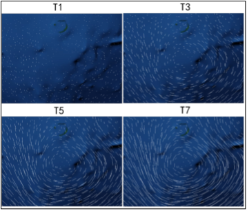
（a）不同帧的显示时刻
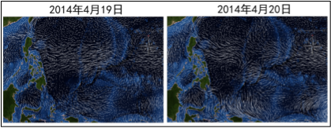
（b）不同时间的显示时刻
图4 显示时刻
变化次序是指地图中各个场景出现的先后顺序。对于时间动画来说，时间是内在的次序。将现实世界中的动态现象按照时间分辨率映射到动画地图的每一帧上，通过动画的播放再现时空现象的动态过程。对于非时间动画来说，可以用不同的变化次序来强调某些现象之间的关系。矢量场粒子系统是一种时间动画，粒子符号会随着时间的变化而变化，符号的运动方向与当前矢量场的流速流向有关。如图5所示为粒子连续四个时刻的变化情况。
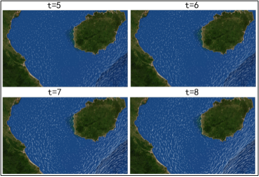
图5 变化次序
持续时间是指动态地图中各个场景之间的时间长度，持续时间越长，现象的生成时间或者出现的时间就越长。粒子符号的频率和持续时间相联系，任何一个都可以通过另外一个来定义。
频率是指单位时间内现象变化的次数。对于时间动画来说，现象出现的频率与现象实际的变化一样，具有实际的意义；对于非时间动画来说，频率的不同可以表明现象的重要程度。粒子符号的频率由系统的刷新频率决定。视觉研究表明，当场景画面的频率低于每秒25帧时，人眼就会识别出是连贯的照片而不是动画，导致场景产生严重的不连续感和跳跃感。所以粒子符号的频率保持在每秒30帧以上，以确保粒子系统对矢量场的可视化形成连续的动画效果。
图6 矢量场粒子管理体系
在矢量场粒子的管理体系中，粒子系统作为管理体系的根节点，直接管理所有地理瓦片。地理瓦片是将全球划分为M×N个相同大小的矩形格网。地理瓦片的设置是为了实现系统的分块动态调度，减少数据计算量和场景渲染量，使系统从原来对每一个粒子做视景体裁剪简化为对每一块地理瓦片做视景体裁剪，通过筛选找出当前不在视景体内的瓦片，从而避免在可视化过程中对场景外的粒子进行计算和显示，有效提高可视化效率。
地理瓦片中的每一瓦片又直接管理数据格网，数据格网中的每个格网大小取决于当前采用的矢量场数据的分辨率。每个地理瓦片会分别记录它所管理的数据格网的起止行列号。数据格网设置的意义是通过控制每个格网中的粒子数量来保证场景中粒子分布的动态平衡：粒子运动过程中，当某个格网中粒子数量超过设置的上限时，对超出粒子加速消亡；当粒子数量低于设置的下限时，在格网内的随机位置生成新的粒子。通过这一方法避免了矢量场中的粒子在运动过程中发生分散或聚集的现象保证粒子的动态均匀分布。
管理体系的叶子节点是粒子，每个粒子由它当前所处的数据格网进行管理，这是因为粒子的驱动是在规则的数据格网下进行的。每个粒子不仅记录它当前的经度、纬度和高度信息，还记录了所在格网的行列号以及之前经过的迹线位置信息，这些信息可以用于在显示输出时进行可视化渲染表达。
通过构建上述的粒子系统三级管理体系，提高了数据的检索效率，形成了清晰的结构层次，有效控制了场景中总粒子数量以及粒子的更新情况。实现对粒子和矢量场数据进行分块调度，减少计算机的计算量，保证可视化系统的运行流畅和美观。
每个粒子都有出生、发展、消亡的生命历程，整个粒子系统不断更新，保持一种动态平衡，虽然这种平衡可以保证粒子的总数量维持在一个稳定的范围，但在矢量场模拟中，由于流速大小及空间分布不均匀，在运动过程中粒子可能聚集在一起，如矢量场中有涡旋时，使整个矢量场内有的部分粒子很多，有的部分粒子很少，不利于矢量场演示的整体效果. 因此在制定粒子的出生规则时，通过遍历各个网格中的粒子个数，在粒子数为零的网格中随机生成粒子，不仅部分缓解了粒子密度不均的问题，也使粒子系统能很快在全矢量场布满。对于粒子的消亡，为控制矢量场的粒子密度,同样通过对各网格中进出的粒子进行统计，当超过规定个数后，随机清除该网格中多余的粒子。这样从出生和消亡两个方面控制整个矢量场中粒子的密度，使粒子能比较均匀地分布于全矢量场，达到了较好的模拟效果。
通过网格来控制粒子的出生与消亡，以此来控制系统中粒子的数量和密度，具体操作方法如下：
（1）每个网格中的粒子数必须在区间[M，N] 内，粒子的最小追踪步数为C，
（2）当网格中的粒子数目大于N时，首先删除步数达到C的粒子，再随机删除多余部分粒子，这样可以避免粒子在刚出生时就将粒子删掉，导致在动态表达过程中，视觉闪烁现象严重。
（3）当网格中的粒子数目小于M时，在格网中随机增加一个新的粒子。
在格网中生成新粒子的过程中，采用在靠近格网四个角点的位置生成，这样可以避免粒子生成过快而导致粒子重叠的现象。
粒子的步长决定了粒子的追踪精度以及粒子流线的长度。当视点较高时，用户观察的是矢量场的整体变化，所以粒子步长应该较长，构建流线突出矢量场的整体结构。当视点较低时，用户观察的是矢量场的局部细节，所以应该缩小步长，提高粒子的追踪精度。如果在视点高度变化的过程中，粒子的步长保持不变，就会出现在视点较高时流线太短，不能表现出矢量场的整体趋势，在视点较低时，步长太长，突显不出矢量场的局部细节，而且由于流线太长，粒子追踪精度较低，出现粒子交叉造成视觉混乱。在不同尺度下，应根据视点的高度计算当前粒子的基础步长，以保证在不同的视点高度下，粒子的步长都能够适合当前尺度粒子系统对矢量场表达的需求。
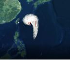 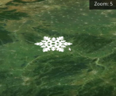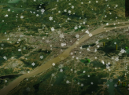